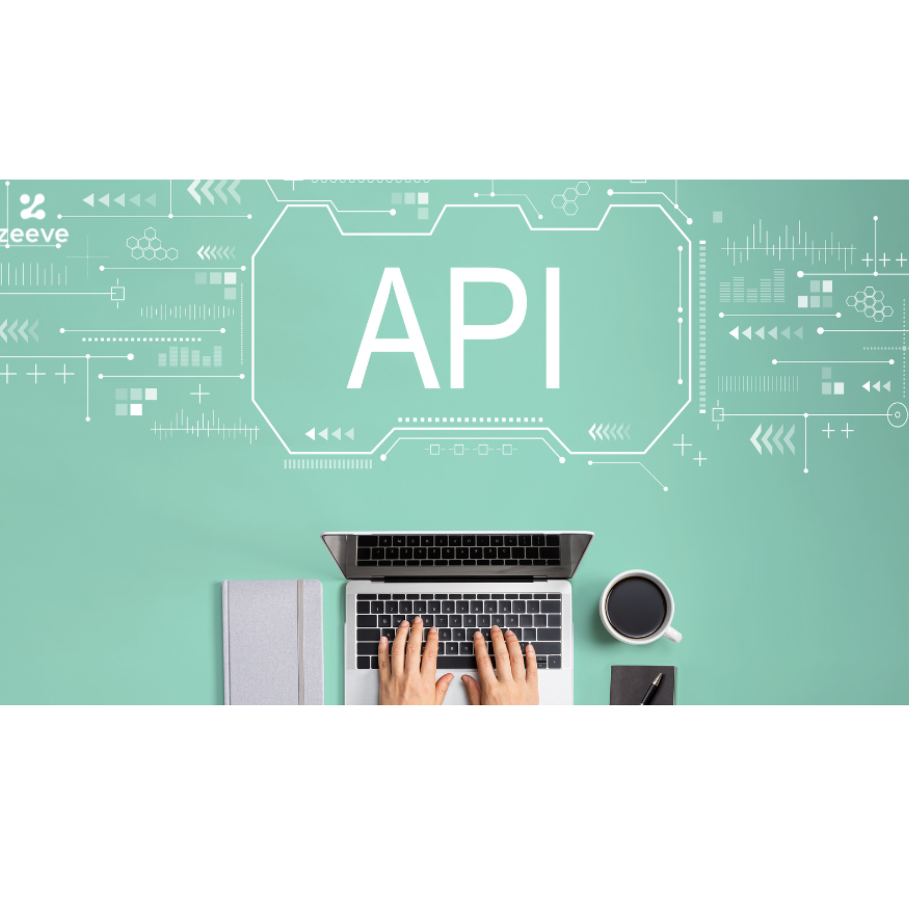

To join any of our computing and informatics programs, applicants must meet the following minimum requirements:
Note: Specific programs may have additional requirements. Please check individual program details.

Duration: 4 years (8 semesters)
Description: This program provides a comprehensive foundation in computer science principles, including algorithms, data structures, programming languages, software engineering, and computer systems. Students gain hands-on experience through labs and projects.
Career Prospects: Software Developer, Systems Analyst, Data Scientist, AI Researcher, Cybersecurity Specialist.
Key Modules: Programming Fundamentals, Discrete Mathematics, Database Systems, Artificial Intelligence, Computer Networks.
Duration: 4 years (8 semesters)
Description: Focused on the practical application of technology in business and organizations, this program covers IT infrastructure, systems administration, web development, and digital solutions.
Career Prospects: IT Manager, Network Administrator, Web Developer, IT Consultant, Systems Engineer.
Key Modules: Information Systems, Network Security, Web Technologies, IT Project Management, Cloud Computing.
Duration: 4 years (8 semesters)
Description: This program emphasizes software development methodologies, quality assurance, and engineering principles applied to software systems. Students learn to design, develop, and maintain complex software applications.
Career Prospects: Software Engineer, Quality Assurance Engineer, DevOps Engineer, Technical Lead, Product Manager.
Key Modules: Software Design Patterns, Testing and Quality Assurance, Agile Methodologies, Mobile App Development, Software Architecture.
Duration: 4 years (8 semesters)
Description: Combining business knowledge with computing skills, this program prepares students to leverage technology for business solutions, including e-commerce, enterprise systems, and data analytics.
Career Prospects: Business Analyst, IT Business Partner, E-commerce Specialist, Data Analyst, ERP Consultant.
Key Modules: Business Information Systems, E-commerce, Data Analytics, Enterprise Resource Planning, Digital Marketing.

Duration: 4 years (8 semesters)
Description: This program focuses on the design, implementation, and management of information systems in organizations, integrating technology with business processes and user needs.
Career Prospects: Information Systems Manager, Database Administrator, Systems Integrator, IT Project Manager, Business Intelligence Analyst.
Key Modules: Systems Analysis and Design, Database Management, Information Security, Human-Computer Interaction, Decision Support Systems.

Duration: 2 years (4 semesters)
Description: Designed to equip students with skills in protecting digital assets, this diploma covers network security, ethical hacking, cryptography, and cybersecurity policies.
Career Prospects: Cybersecurity Analyst, Security Consultant, Ethical Hacker, Network Security Specialist, Compliance Officer.
Key Modules: Network Security, Ethical Hacking, Cryptography, Incident Response, Security Auditing.

Duration: 1 year (2 semesters)
Description: This certificate program introduces students to data analysis, machine learning, and statistical methods for extracting insights from data.
Career Prospects: Data Analyst, Junior Data Scientist, Business Intelligence Analyst, Research Assistant.
Key Modules: Statistics for Data Science, Machine Learning Basics, Data Visualization, Python for Data Analysis, Big Data Fundamentals.